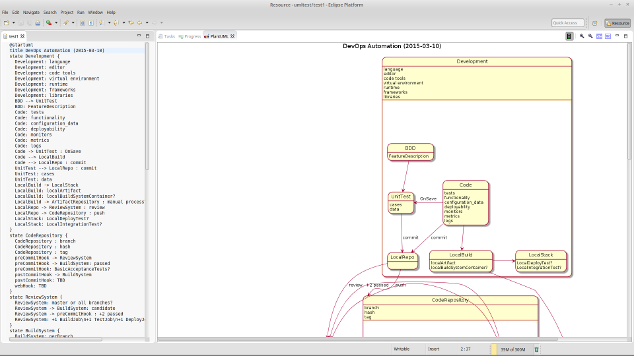

A DevOps Automation State Diagram
10/Mar 2015
Wonderful accomplishments kicked-off my Infrastructure as Code project. One needs to start with a map of the world before deciding where to focus their efforts. It’s even better when you can optimize and render the new map in real-time!
Beautiful Tool and Diagram
I found and created two wonderful things today:
I found exactly the tool I have been looking for over the years! I used Wikipedia and alternativeTo to survey the market for competitors to my favorite open source object drawing tool, Dia.
The following snapshot shows authoring a work-in-progress diagram… I’ve been trying to create this for a quite a while and I’m glad to have the time to do it properly.

The DevOps mission to reduce all friction between the developer’s code and deployment to production is mostly captured by this diagram. It has been in my head for a while, extended past but based on work with my colleagues at Pertino. It is mostly complete, a bit of an eye-chart, and I want to improve the flow by reducing crossing lines. Working on this as a state diagram has yielded some insight into improvements, optimization, and bottlenecks. I plan to release the source file as part of my infrastructure as code project.
I made it with PlantUML in Eclipse with GraphViz with a view
rendering the results on the fly (no need to save) which felt like unit testing my diagram!
This allowed me to iterate frequently with text rather than graphics: brilliant and yet
another example as infrastructure as code. :~) My standby object drawing program, Dia,
would have done the trick as well, perhaps even better from a layout crossing lines perspective,
but re-factoring would have been slower. Re-factoring was key in making improvements and I could
perform analysis on my arrow layout hints, e.g.: $ grep ‘–>’ | wc –lines
I’ll update with the final product soon: you will be able to view the SVG image in a new browser window or tab, then scale it to your liking. I’m very happy with the results of performing this work with open source software and formats (currently 45Kb SVG which allows you to copy the text of the diagram) for flexibility and performance.
UPDATE
Please see the next posting for the “final” product.
Post Script: 2015-08-10
There are other UML modelers, I think (http://blog.staruml.io/) and yEd are noteworthy.
However, as I explore the work flow and orchestration space, I am rediscovering the work done for Business Process Modeling standards, such as BPEL and BPMN, and their various implementations with modelers such as:
* www.open-esb.net
* [Sirius](http://www.eclipse.org/sirius/getstarted.html) and tools build on it.
implemented in ServiceMix and ProcessMaker.
This was triggered by my recent research into OASIS TOSCA and CAMP standards: everything new feels old again! :~)s